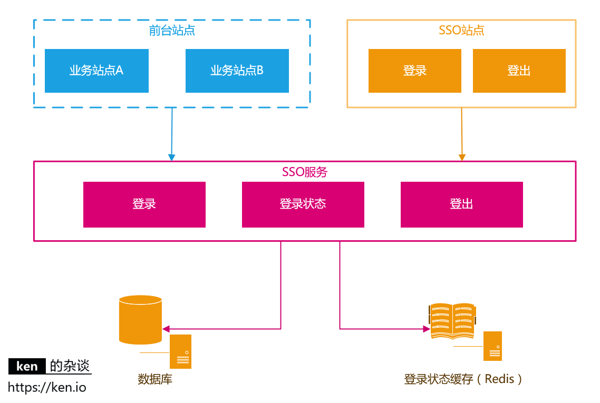

认证授权基础概念详解
认证 (Authentication) 和授权 (Authorization)的区别是什么？
这是一个绝大多数人都会混淆的问题。首先先从读音上来认识这两个名词，很多人都会把它俩的读音搞混，所以我建议你先先去查一查这两个单词到底该怎么读，他们的具体含义是什么。
说简单点就是：
- 认证 (Authentication)： 你是谁。
- 授权 (Authorization)： 你有权限干什么。
稍微正式点（啰嗦点）的说法就是：
- Authentication（认证） 是验证您的身份的凭据（例如用户名/用户 ID 和密码），通过这个凭据，系统得以知道你就是你，也就是说系统存在你这个用户。所以，Authentication 被称为身份/用户验证。
- Authorization（授权） 发生在 Authentication（认证） 之后。授权嘛，光看意思大家应该就明白，它主要掌管我们访问系统的权限。比如有些特定资源只能具有特定权限的人才能访问比如 admin，有些对系统资源操作比如删除、添加、更新只能特定人才具有。
认证：
授权：
RBAC 模型了解吗？
系统权限控制最常采用的访问控制模型就是 RBAC 模型 。
什么是 RBAC 呢？
RBAC 即基于角色的权限访问控制 Role-Based Access Control。这是一种通过角色关联权限，角色同时又关联用户的授权的方式。
简单地说：一个用户可以拥有若干角色，每一个角色又可以被分配若干权限，这样就构造成“用户-角色-权限” 的授权模型。在这种模型中，用户与角色、角色与权限之间构成了多对多的关系，如下图
在 RBAC 中，权限与角色相关联，用户通过成为适当角色的成员而得到这些角色的权限。这就极大地简化了权限的管理。
本系统的权限设计相关的表如下（一共 5 张表，2 张用户建立表之间的联系）：

通过这个权限模型，我们可以创建不同的角色并为不同的角色分配不同的权限范围（菜单）。

通常来说，如果系统对于权限控制要求比较严格的话，一般都会选择使用 RBAC 模型来做权限控制。
什么是 Cookie ? Cookie 的作用是什么?
Cookie 和 Session 都是用来跟踪浏览器用户身份的会话方式，但是两者的应用场景不太一样。
维基百科是这样定义 Cookie 的：
Cookies是某些网站为了辨别用户身份而储存在用户本地终端上的数据（通常经过加密）。
简单来说：Cookie 存放在客户端，一般用来保存用户信息。
下面是 Cookie 的一些应用案例：
- 我们在
Cookie中保存已经登录过的用户信息，下次访问网站的时候页面可以自动帮你登录的一些基本信息给填了。除此之外，Cookie还能保存用户首选项，主题和其他设置信息。 - 使用
Cookie保存SessionId或者Token，向后端发送请求的时候带上Cookie，这样后端就能取到Session或者Token了。这样就能记录用户当前的状态了，因为 HTTP 协议是无状态的。 Cookie还可以用来记录和分析用户行为。举个简单的例子你在网上购物的时候，因为 HTTP 协议是没有状态的，如果服务器想要获取你在某个页面的停留状态或者看了哪些商品，一种常用的实现方式就是将这些信息存放在Cookie
如何在项目中使用 Cookie 呢？
我这里以 Spring Boot 项目为例。
1)设置 Cookie 返回给客户端
|
|
2) 使用 Spring 框架提供的 @CookieValue 注解获取特定的 cookie 的值
|
|
3) 读取所有的 Cookie 值
|
|
更多关于如何在 Spring Boot 中使用 Cookie 的内容可以查看这篇文章：How to use cookies in Spring Boot 。
Cookie 和 Session 有什么区别？
Session 的主要作用就是通过服务端记录用户的状态。 典型的场景是购物车，当你要添加商品到购物车的时候，系统不知道是哪个用户操作的，因为 HTTP 协议是无状态的。服务端给特定的用户创建特定的 Session 之后就可以标识这个用户并且跟踪这个用户了。
Cookie 数据保存在客户端(浏览器端)，Session 数据保存在服务器端。相对来说 Session 安全性更高。如果使用 Cookie 的一些敏感信息不要写入 Cookie 中，最好能将 Cookie 信息加密然后使用到的时候再去服务器端解密。
那么，如何使用 Session 进行身份验证？
如何使用 Session-Cookie 方案进行身份验证？
很多时候我们都是通过 SessionID 来实现特定的用户，SessionID 一般会选择存放在 Redis 中。举个例子：
- 用户成功登陆系统，然后返回给客户端具有
SessionID的Cookie。 - 当用户向后端发起请求的时候会把
SessionID带上，这样后端就知道你的身份状态了。
关于这种认证方式更详细的过程如下：
- 用户向服务器发送用户名、密码、验证码用于登陆系统。
- 服务器验证通过后，服务器为用户创建一个
Session，并将Session信息存储起来。 - 服务器向用户返回一个
SessionID，写入用户的Cookie。 - 当用户保持登录状态时，
Cookie将与每个后续请求一起被发送出去。 - 服务器可以将存储在
Cookie上的SessionID与存储在内存中或者数据库中的Session信息进行比较，以验证用户的身份，返回给用户客户端响应信息的时候会附带用户当前的状态。
使用 Session 的时候需要注意下面几个点：
- 依赖
Session的关键业务一定要确保客户端开启了Cookie。 - 注意
Session的过期时间。
另外，Spring Session 提供了一种跨多个应用程序或实例管理用户会话信息的机制。如果想详细了解可以查看下面几篇很不错的文章：
- Getting Started with Spring Session
- Guide to Spring Session
- Sticky Sessions with Spring Session & Redis
多服务器节点下 Session-Cookie 方案如何做？
Session-Cookie 方案在单体环境是一个非常好的身份认证方案。但是，当服务器水平拓展成多节点时，Session-Cookie 方案就要面临挑战了。
举个例子：假如我们部署了两份相同的服务 A，B，用户第一次登陆的时候 ，Nginx 通过负载均衡机制将用户请求转发到 A 服务器，此时用户的 Session 信息保存在 A 服务器。结果，用户第二次访问的时候 Nginx 将请求路由到 B 服务器，由于 B 服务器没有保存 用户的 Session 信息，导致用户需要重新进行登陆。
我们应该如何避免上面这种情况的出现呢？
有几个方案可供大家参考：
- 某个用户的所有请求都通过特性的哈希策略分配给同一个服务器处理。这样的话，每个服务器都保存了一部分用户的 Session 信息。服务器宕机，其保存的所有 Session 信息就完全丢失了。
- 每一个服务器保存的 Session 信息都是互相同步的，也就是说每一个服务器都保存了全量的 Session 信息。每当一个服务器的 Session 信息发生变化，我们就将其同步到其他服务器。这种方案成本太大，并且，节点越多时，同步成本也越高。
- 单独使用一个所有服务器都能访问到的数据节点（比如缓存）来存放 Session 信息。为了保证高可用，数据节点尽量要避免是单点。
如果没有 Cookie 的话 Session 还能用吗？
这是一道经典的面试题！
一般是通过 Cookie 来保存 SessionID ，假如你使用了 Cookie 保存 SessionID 的方案的话， 如果客户端禁用了 Cookie，那么 Session 就无法正常工作。
但是，并不是没有 Cookie 之后就不能用 Session 了，比如你可以将 SessionID 放在请求的 url 里面https://javaguide.cn/?Session_id=xxx 。这种方案的话可行，但是安全性和用户体验感降低。当然，为了你也可以对 SessionID 进行一次加密之后再传入后端。
为什么 Cookie 无法防止 CSRF 攻击，而 Token 可以？
CSRF(Cross Site Request Forgery) 一般被翻译为 跨站请求伪造 。那么什么是 跨站请求伪造 呢？说简单用你的身份去发送一些对你不友好的请求。举个简单的例子：
小壮登录了某网上银行，他来到了网上银行的帖子区，看到一个帖子下面有一个链接写着“科学理财，年盈利率过万”，小壮好奇的点开了这个链接，结果发现自己的账户少了 10000 元。这是这么回事呢？原来黑客在链接中藏了一个请求，这个请求直接利用小壮的身份给银行发送了一个转账请求,也就是通过你的 Cookie 向银行发出请求。
|
|
上面也提到过，进行 Session 认证的时候，我们一般使用 Cookie 来存储 SessionId,当我们登陆后后端生成一个 SessionId 放在 Cookie 中返回给客户端，服务端通过 Redis 或者其他存储工具记录保存着这个 SessionId，客户端登录以后每次请求都会带上这个 SessionId，服务端通过这个 SessionId 来标示你这个人。如果别人通过 Cookie 拿到了 SessionId 后就可以代替你的身份访问系统了。
Session 认证中 Cookie 中的 SessionId 是由浏览器发送到服务端的，借助这个特性，攻击者就可以通过让用户误点攻击链接，达到攻击效果。
但是，我们使用 Token 的话就不会存在这个问题，在我们登录成功获得 Token 之后，一般会选择存放在 localStorage （浏览器本地存储）中。然后我们在前端通过某些方式会给每个发到后端的请求加上这个 Token,这样就不会出现 CSRF 漏洞的问题。因为，即使有个你点击了非法链接发送了请求到服务端，这个非法请求是不会携带 Token 的，所以这个请求将是非法的。
需要注意的是：不论是 Cookie 还是 Token 都无法避免 跨站脚本攻击（Cross Site Scripting）XSS 。
跨站脚本攻击（Cross Site Scripting）缩写为 CSS 但这会与层叠样式表（Cascading Style Sheets，CSS）的缩写混淆。因此，有人将跨站脚本攻击缩写为 XSS。
XSS 中攻击者会用各种方式将恶意代码注入到其他用户的页面中。就可以通过脚本盗用信息比如 Cookie 。
推荐阅读：如何防止 CSRF 攻击？—美团技术团队
JWT
JWT （JSON Web Token） 是目前最流行的跨域认证解决方案，是一种基于 Token 的认证授权机制。 从 JWT 的全称可以看出，JWT 本身也是 Token，一种规范化之后的 JSON 结构的 Token。
JWT 自身包含了身份验证所需要的所有信息，因此，我们的服务器不需要存储 Session 信息。这显然增加了系统的可用性和伸缩性，大大减轻了服务端的压力。
可以看出，JWT 更符合设计 RESTful API 时的「Stateless（无状态）」原则 。
并且， 使用 JWT 认证可以有效避免 CSRF 攻击，因为 JWT 一般是存在在 localStorage 中，使用 JWT 进行身份验证的过程中是不会涉及到 Cookie 的。
下面是 RFC 7519 对 JWT 做的较为正式的定义。
JSON Web Token (JWT) is a compact, URL-safe means of representing claims to be transferred between two parties. The claims in a JWT are encoded as a JSON object that is used as the payload of a JSON Web Signature (JWS) structure or as the plaintext of a JSON Web Encryption (JWE) structure, enabling the claims to be digitally signed or integrity protected with a Message Authentication Code (MAC) and/or encrypted. ——JSON Web Token (JWT)
JWT 由哪些部分组成？
JWT 本质上就是一组字串，通过（.）切分成三个为 Base64 编码的部分：
- Header : 描述 JWT 的元数据，定义了生成签名的算法以及
Token的类型。 - Payload : 用来存放实际需要传递的数据
- Signature（签名）：服务器通过 Payload、Header 和一个密钥(Secret)使用 Header 里面指定的签名算法（默认是 HMAC SHA256）生成。
JWT 通常是这样的：xxxxx.yyyyy.zzzzz。
示例：
|
|
你可以在 jwt.io 这个网站上对其 JWT 进行解码，解码之后得到的就是 Header、Payload、Signature 这三部分。
Header 和 Payload 都是 JSON 格式的数据，Signature 由 Payload、Header 和 Secret(密钥)通过特定的计算公式和加密算法得到。
Header
Header 通常由两部分组成：
typ（Type）：令牌类型，也就是 JWT。alg（Algorithm）：签名算法，比如 HS256。
示例：
|
|
JSON 形式的 Header 被转换成 Base64 编码，成为 JWT 的第一部分。
Payload
Payload 也是 JSON 格式数据，其中包含了 Claims(声明，包含 JWT 的相关信息)。
Claims 分为三种类型：
- Registered Claims（注册声明）：预定义的一些声明，建议使用，但不是强制性的。
- Public Claims（公有声明）：JWT 签发方可以自定义的声明，但是为了避免冲突，应该在 IANA JSON Web Token Registry 中定义它们。
- Private Claims（私有声明）：JWT 签发方因为项目需要而自定义的声明，更符合实际项目场景使用。
下面是一些常见的注册声明：
iss（issuer）：JWT 签发方。iat（issued at time）：JWT 签发时间。sub（subject）：JWT 主题。aud（audience）：JWT 接收方。exp（expiration time）：JWT 的过期时间。nbf（not before time）：JWT 生效时间，早于该定义的时间的 JWT 不能被接受处理。jti（JWT ID）：JWT 唯一标识。
示例：
|
|
Payload 部分默认是不加密的，一定不要将隐私信息存放在 Payload 当中！！！
JSON 形式的 Payload 被转换成 Base64 编码，成为 JWT 的第二部分。
Signature
Signature 部分是对前两部分的签名，作用是防止 JWT（主要是 payload） 被篡改。
这个签名的生成需要用到：
- Header + Payload。
- 存放在服务端的密钥(一定不要泄露出去)。
- 签名算法。
签名的计算公式如下：
|
|
算出签名以后，把 Header、Payload、Signature 三个部分拼成一个字符串，每个部分之间用"点"（.）分隔，这个字符串就是 JWT 。
如何基于 JWT 进行身份验证？
在基于 JWT 进行身份验证的的应用程序中，服务器通过 Payload、Header 和 Secret(密钥)创建 JWT 并将 JWT 发送给客户端。客户端接收到 JWT 之后，会将其保存在 Cookie 或者 localStorage 里面，以后客户端发出的所有请求都会携带这个令牌。
在基于 JWT 进行身份验证的的应用程序中，服务器通过 Payload、Header 和 Secret(密钥)创建 JWT 并将 JWT 发送给客户端。客户端接收到 JWT 之后，会将其保存在 Cookie 或者 localStorage 里面，以后客户端发出的所有请求都会携带这个令牌。

简化后的步骤如下：
- 用户向服务器发送用户名、密码以及验证码用于登陆系统。
- 如果用户用户名、密码以及验证码校验正确的话，服务端会返回已经签名的 Token，也就是 JWT。
- 用户以后每次向后端发请求都在 Header 中带上这个 JWT 。
- 服务端检查 JWT 并从中获取用户相关信息。
两点建议：
- 建议将 JWT 存放在 localStorage 中，放在 Cookie 中会有 CSRF 风险。
- 请求服务端并携带 JWT 的常见做法是将其放在 HTTP Header 的
Authorization字段中（Authorization: Bearer Token）。
spring-security-jwt-guide 就是一个基于 JWT 来做身份认证的简单案例，感兴趣的可以看看。
如何防止 JWT 被篡改？
有了签名之后，即使 JWT 被泄露或者截获，黑客也没办法同时篡改 Signature、Header、Payload。
这是为什么呢？因为服务端拿到 JWT 之后，会解析出其中包含的 Header、Payload 以及 Signature 。服务端会根据 Header、Payload、密钥再次生成一个 Signature。拿新生成的 Signature 和 JWT 中的 Signature 作对比，如果一样就说明 Header 和 Payload 没有被修改。
不过，如果服务端的秘钥也被泄露的话，黑客就可以同时篡改 Signature、Header、Payload 了。黑客直接修改了 Header 和 Payload 之后，再重新生成一个 Signature 就可以了。
密钥一定保管好，一定不要泄露出去。JWT 安全的核心在于签名，签名安全的核心在密钥。
如何加强 JWT 的安全性？
- 使用安全系数高的加密算法。
- 使用成熟的开源库，没必要造轮子。
- JWT 存放在 localStorage 中而不是 Cookie 中，避免 CSRF 风险。
- 一定不要将隐私信息存放在 Payload 当中。
- 密钥一定保管好，一定不要泄露出去。JWT 安全的核心在于签名，签名安全的核心在密钥。
- Payload 要加入
exp（JWT 的过期时间），永久有效的 JWT 不合理。并且，JWT 的过期时间不易过长。
什么是 SSO?
SSO(Single Sign On)即单点登录说的是用户登陆多个子系统的其中一个就有权访问与其相关的其他系统。举个例子我们在登陆了京东金融之后，我们同时也成功登陆京东的京东超市、京东国际、京东生鲜等子系统。
SSO的好处
用户角度 :用户能够做到一次登录多次使用，无需记录多套用户名和密码，省心。
系统管理员角度 : 管理员只需维护好一个统一的账号中心就可以了，方便。
新系统开发角度: 新系统开发时只需直接对接统一的账号中心即可，简化开发流程，省时。
什么是 OAuth 2.0？
OAuth 是一个行业的标准授权协议，主要用来授权第三方应用获取有限的权限。而 OAuth 2.0 是对 OAuth 1.0 的完全重新设计，OAuth 2.0 更快，更容易实现，OAuth 1.0 已经被废弃。详情请见：rfc6749。
实际上它就是一种授权机制，它的最终目的是为第三方应用颁发一个有时效性的令牌 Token，使得第三方应用能够通过该令牌获取相关的资源。
OAuth 2.0 比较常用的场景就是第三方登录，当你的网站接入了第三方登录的时候一般就是使用的 OAuth 2.0 协议。
另外，现在 OAuth 2.0 也常见于支付场景（微信支付、支付宝支付）和开发平台（微信开放平台、阿里开放平台等等）。
下图是 Slack OAuth 2.0 第三方登录的示意图：
推荐阅读：
JWT 身份认证优缺点分析
JWT 的优势
相比于 Session 认证的方式来说，使用 JWT 进行身份认证主要有下面 4 个优势。
无状态
JWT 自身包含了身份验证所需要的所有信息，因此，我们的服务器不需要存储 Session 信息。这显然增加了系统的可用性和伸缩性，大大减轻了服务端的压力。
不过，也正是由于 JWT 的无状态，也导致了它最大的缺点：不可控！
就比如说，我们想要在 JWT 有效期内废弃一个 JWT 或者更改它的权限的话，并不会立即生效，通常需要等到有效期过后才可以。再比如说，当用户 Logout 的话，JWT 也还有效。除非，我们在后端增加额外的处理逻辑比如将失效的 JWT 存储起来，后端先验证 JWT 是否有效再进行处理。具体的解决办法，我们会在后面的内容中详细介绍到，这里只是简单提一下。
有效避免了 CSRF 攻击
CSRF（Cross Site Request Forgery） 一般被翻译为 跨站请求伪造，属于网络攻击领域范围。相比于 SQL 脚本注入、XSS 等安全攻击方式，CSRF 的知名度并没有它们高。但是，它的确是我们开发系统时必须要考虑的安全隐患。就连业内技术标杆 Google 的产品 Gmail 也曾在 2007 年的时候爆出过 CSRF 漏洞，这给 Gmail 的用户造成了很大的损失。
那么究竟什么是跨站请求伪造呢？ 简单来说就是用你的身份去做一些不好的事情（发送一些对你不友好的请求比如恶意转账）。
举个简单的例子：小壮登录了某网上银行，他来到了网上银行的帖子区，看到一个帖子下面有一个链接写着“科学理财，年盈利率过万”，小壮好奇的点开了这个链接，结果发现自己的账户少了 10000 元。这是这么回事呢？原来黑客在链接中藏了一个请求，这个请求直接利用小壮的身份给银行发送了一个转账请求，也就是通过你的 Cookie 向银行发出请求。
|
|
CSRF 攻击需要依赖 Cookie ，Session 认证中 Cookie 中的 SessionID 是由浏览器发送到服务端的，只要发出请求，Cookie 就会被携带。借助这个特性，即使黑客无法获取你的 SessionID，只要让你误点攻击链接，就可以达到攻击效果。
另外，并不是必须点击链接才可以达到攻击效果，很多时候，只要你打开了某个页面，CSRF 攻击就会发生。
|
|
那为什么 JWT 不会存在这种问题呢？
一般情况下我们使用 JWT 的话，在我们登录成功获得 JWT 之后，一般会选择存放在 localStorage 中。前端的每一个请求后续都会附带上这个 JWT，整个过程压根不会涉及到 Cookie。因此，即使你点击了非法链接发送了请求到服务端，这个非法请求也是不会携带 JWT 的，所以这个请求将是非法的。
总结来说就一句话：使用 JWT 进行身份验证不需要依赖 Cookie ，因此可以避免 CSRF 攻击。
不过，这样也会存在 XSS 攻击的风险。为了避免 XSS 攻击，你可以选择将 JWT 存储在标记为httpOnly 的 Cookie 中。但是，这样又导致了你必须自己提供 CSRF 保护，因此，实际项目中我们通常也不会这么做。
常见的避免 XSS 攻击的方式是过滤掉请求中存在 XSS 攻击风险的可疑字符串。
在 Spring 项目中，我们一般是通过创建 XSS 过滤器来实现的。
|
|
适合移动端应用
使用 Session 进行身份认证的话，需要保存一份信息在服务器端，而且这种方式会依赖到 Cookie（需要 Cookie 保存 SessionId），所以不适合移动端。
但是，使用 JWT 进行身份认证就不会存在这种问题，因为只要 JWT 可以被客户端存储就能够使用，而且 JWT 还可以跨语言使用。
单点登录友好
使用 Session 进行身份认证的话，实现单点登录，需要我们把用户的 Session 信息保存在一台电脑上，并且还会遇到常见的 Cookie 跨域的问题。但是，使用 JWT 进行认证的话， JWT 被保存在客户端，不会存在这些问题。
JWT 身份认证常见问题及解决办法
注销登录等场景下 JWT 还有效
与之类似的具体相关场景有：
- 退出登录;
- 修改密码;
- 服务端修改了某个用户具有的权限或者角色；
- 用户的帐户被封禁/删除；
- 用户被服务端强制注销；
- 用户被踢下线；
- ……
这个问题不存在于 Session 认证方式中，因为在 Session 认证方式中，遇到这种情况的话服务端删除对应的 Session 记录即可。但是，使用 JWT 认证的方式就不好解决了。我们也说过了，JWT 一旦派发出去，如果后端不增加其他逻辑的话，它在失效之前都是有效的。
那我们如何解决这个问题呢？查阅了很多资料，我简单总结了下面 4 种方案：
1、将 JWT 存入内存数据库
将 JWT 存入 DB 中，Redis 内存数据库在这里是不错的选择。如果需要让某个 JWT 失效就直接从 Redis 中删除这个 JWT 即可。但是，这样会导致每次使用 JWT 发送请求都要先从 DB 中查询 JWT 是否存在的步骤，而且违背了 JWT 的无状态原则。
2、黑名单机制
和上面的方式类似，使用内存数据库比如 Redis 维护一个黑名单，如果想让某个 JWT 失效的话就直接将这个 JWT 加入到 黑名单 即可。然后，每次使用 JWT 进行请求的话都会先判断这个 JWT 是否存在于黑名单中。
前两种方案的核心在于将有效的 JWT 存储起来或者将指定的 JWT 拉入黑名单。
虽然这两种方案都违背了 JWT 的无状态原则，但是一般实际项目中我们通常还是会使用这两种方案。
3、修改密钥 (Secret) :
我们为每个用户都创建一个专属密钥，如果我们想让某个 JWT 失效，我们直接修改对应用户的密钥即可。但是，这样相比于前两种引入内存数据库带来了危害更大：
- 如果服务是分布式的，则每次发出新的 JWT 时都必须在多台机器同步密钥。为此，你需要将密钥存储在数据库或其他外部服务中，这样和 Session 认证就没太大区别了。
- 如果用户同时在两个浏览器打开系统，或者在手机端也打开了系统，如果它从一个地方将账号退出，那么其他地方都要重新进行登录，这是不可取的。
4、保持令牌的有效期限短并经常轮换
很简单的一种方式。但是，会导致用户登录状态不会被持久记录，而且需要用户经常登录。
另外，对于修改密码后 JWT 还有效问题的解决还是比较容易的。说一种我觉得比较好的方式：使用用户的密码的哈希值对 JWT 进行签名。因此，如果密码更改，则任何先前的令牌将自动无法验证。
JWT 的续签问题
JWT 有效期一般都建议设置的不太长，那么 JWT 过期后如何认证，如何实现动态刷新 JWT，避免用户经常需要重新登录？
我们先来看看在 Session 认证中一般的做法：假如 Session 的有效期 30 分钟，如果 30 分钟内用户有访问，就把 Session 有效期延长 30 分钟。
JWT 认证的话，我们应该如何解决续签问题呢？查阅了很多资料，我简单总结了下面 4 种方案：
1、类似于 Session 认证中的做法
这种方案满足于大部分场景。假设服务端给的 JWT 有效期设置为 30 分钟，服务端每次进行校验时，如果发现 JWT 的有效期马上快过期了，服务端就重新生成 JWT 给客户端。客户端每次请求都检查新旧 JWT，如果不一致，则更新本地的 JWT。这种做法的问题是仅仅在快过期的时候请求才会更新 JWT ,对客户端不是很友好。
2、每次请求都返回新 JWT
这种方案的的思路很简单，但是，开销会比较大，尤其是在服务端要存储维护 JWT 的情况下。
3、JWT 有效期设置到半夜
这种方案是一种折衷的方案，保证了大部分用户白天可以正常登录，适用于对安全性要求不高的系统。
4、用户登录返回两个 JWT
第一个是 accessJWT ，它的过期时间 JWT 本身的过期时间比如半个小时，另外一个是 refreshJWT 它的过期时间更长一点比如为 1 天。客户端登录后，将 accessJWT 和 refreshJWT 保存在本地，每次访问将 accessJWT 传给服务端。服务端校验 accessJWT 的有效性，如果过期的话，就将 refreshJWT 传给服务端。如果有效，服务端就生成新的 accessJWT 给客户端。否则，客户端就重新登录即可。
这种方案的不足是：
- 需要客户端来配合；
- 用户注销的时候需要同时保证两个 JWT 都无效；
- 重新请求获取 JWT 的过程中会有短暂 JWT 不可用的情况（可以通过在客户端设置定时器，当 accessJWT 快过期的时候，提前去通过 refreshJWT 获取新的 accessJWT）;
- 存在安全问题，只要拿到了未过期的 refreshJWT 就一直可以获取到 accessJWT。
总结
JWT 其中一个很重要的优势是无状态，但实际上，我们想要在实际项目中合理使用 JWT 的话，也还是需要保存 JWT 信息。
JWT 也不是银弹，也有很多缺陷，具体是选择 JWT 还是 Session 方案还是要看项目的具体需求。万万不可尬吹 JWT，而看不起其他身份认证方案。
SSO 单点登录详解
SSO 介绍
什么是 SSO？
SSO 英文全称 Single Sign On，单点登录。SSO 是在多个应用系统中，用户只需要登录一次就可以访问所有相互信任的应用系统。
例如你登录网易账号中心（https://reg.163.com/ ）之后访问以下站点都是登录状态。
- 网易直播 https://v.163.com
- 网易博客 https://blog.163.com
- 网易花田 https://love.163.com
- 网易考拉 https://www.kaola.com
- 网易 Lofter http://www.lofter.com
SSO 有什么好处？
- 用户角度 :用户能够做到一次登录多次使用，无需记录多套用户名和密码，省心。
- 系统管理员角度 : 管理员只需维护好一个统一的账号中心就可以了，方便。
- 新系统开发角度: 新系统开发时只需直接对接统一的账号中心即可，简化开发流程，省时。
SSO 设计与实现
本篇文章也主要是为了探讨如何设计&实现一个 SSO 系统
以下为需要实现的核心功能：
- 单点登录
- 单点登出
- 支持跨域单点登录
- 支持跨域单点登出
核心应用与依赖

| 应用/模块/对象 | 说明 |
|---|---|
| 前台站点 | 需要登录的站点 |
| SSO 站点-登录 | 提供登录的页面 |
| SSO 站点-登出 | 提供注销登录的入口 |
| SSO 服务-登录 | 提供登录服务 |
| SSO 服务-登录状态 | 提供登录状态校验/登录信息查询的服务 |
| SSO 服务-登出 | 提供用户注销登录的服务 |
| 数据库 | 存储用户账户信息 |
| 缓存 | 存储用户的登录信息，通常使用 Redis |
用户登录状态的存储与校验
常见的 Web 框架对于 Session 的实现都是生成一个 SessionId 存储在浏览器 Cookie 中。然后将 Session 内容存储在服务器端内存中，这个 ken.io 在之前Session 工作原理中也提到过。整体也是借鉴这个思路。
用户登录成功之后，生成 AuthToken 交给客户端保存。如果是浏览器，就保存在 Cookie 中。如果是手机 App 就保存在 App 本地缓存中。本篇主要探讨基于 Web 站点的 SSO。
用户在浏览需要登录的页面时，客户端将 AuthToken 提交给 SSO 服务校验登录状态/获取用户登录信息
对于登录信息的存储，建议采用 Redis，使用 Redis 集群来存储登录信息，既可以保证高可用，又可以线性扩充。同时也可以让 SSO 服务满足负载均衡/可伸缩的需求。
| 对象 | 说明 |
|---|---|
| AuthToken | 直接使用 UUID/GUID 即可，如果有验证 AuthToken 合法性需求，可以将 UserName+时间戳加密生成，服务端解密之后验证合法性 |
| 登录信息 | 通常是将 UserId，UserName 缓存起来 |
用户登录/登录校验
登录时序图
按照上图，用户登录后 AuthToken 保存在 Cookie 中。 domain=test.com 浏览器会将 domain 设置成 .test.com，
这样访问所有 *.test.com 的 web 站点，都会将 AuthToken 携带到服务器端。 然后通过 SSO 服务，完成对用户状态的校验/用户登录信息的获取。
登录信息获取/登录状态校验
用户登出
用户登出时要做的事情很简单：
- 服务端清除缓存（Redis）中的登录状态
- 客户端清除存储的 AuthToken
登出时序图
跨域登录、登出
前面提到过，核心思路是客户端存储 AuthToken，服务器端通过 Redis 存储登录信息。由于客户端是将 AuthToken 存储在 Cookie 中的。所以跨域要解决的问题，就是如何解决 Cookie 的跨域读写问题。
解决跨域的核心思路就是：
- 登录完成之后通过回调的方式，将 AuthToken 传递给主域名之外的站点，该站点自行将 AuthToken 保存在当前域下的 Cookie 中。
- 登出完成之后通过回调的方式，调用非主域名站点的登出页面，完成设置 Cookie 中的 AuthToken 过期的操作。
跨域登录（主域名已登录）
跨域登录（主域名未登录）
跨域登出

说明
- 关于方案：这次设计方案更多是提供实现思路。如果涉及到 APP 用户登录等情况，在访问 SSO 服务时，增加对 APP 的签名验证就好了。当然，如果有无线网关，验证签名不是问题。
- 关于时序图：时序图中并没有包含所有场景，只列举了核心/主要场景，另外对于一些不影响理解思路的消息能省就省了。
权限系统设计详解
原文：https://mp.weixin.qq.com/s/ONMuELjdHYa0yQceTj01Iw
老权限系统的问题与现状
转转公司在过去并没有一个统一的权限管理系统，权限管理由各业务自行研发或是使用其他业务的权限系统，权限管理的不统一带来了不少问题：
- 各业务重复造轮子，维护成本高
- 各系统只解决部分场景问题，方案不够通用，新项目选型时没有可靠的权限管理方案
- 缺乏统一的日志管理与审批流程，在授权信息追溯上十分困难
基于上述问题，去年底公司启动建设转转统一权限系统，目标是开发一套灵活、易用、安全的权限管理系统，供各业务使用。
业界权限系统的设计方式
目前业界主流的权限模型有两种，下面分别介绍下：
- 基于角色的访问控制（RBAC）
- 基于属性的访问控制（ABAC）
RBAC 模型
基于角色的访问控制（Role-Based Access Control，简称 RBAC） 指的是通过用户的角色（Role）授权其相关权限，实现了灵活的访问控制，相比直接授予用户权限，要更加简单、高效、可扩展。
一个用户可以拥有若干角色，每一个角色又可以被分配若干权限这样，就构造成“用户-角色-权限” 的授权模型。在这种模型中，用户与角色、角色与权限之间构成了多对多的关系。
用一个图来描述如下：
当使用 RBAC模型 时，通过分析用户的实际情况，基于共同的职责和需求，授予他们不同角色。这种 用户 -> 角色 -> 权限 间的关系，让我们可以不用再单独管理单个用户权限，用户从授予的角色里面获取所需的权限。
以一个简单的场景（Gitlab 的权限系统）为例，用户系统中有 Admin、Maintainer、Operator 三种角色，这三种角色分别具备不同的权限，比如只有 Admin 具备创建代码仓库、删除代码仓库的权限，其他的角色都不具备。我们授予某个用户 Admin 这个角色，他就具备了 创建代码仓库 和 删除代码仓库 这两个权限。
通过 RBAC模型 ，当存在多个用户拥有相同权限时，我们只需要创建好拥有该权限的角色，然后给不同的用户分配不同的角色，后续只需要修改角色的权限，就能自动修改角色内所有用户的权限。
ABAC 模型
基于属性的访问控制（Attribute-Based Access Control，简称 ABAC） 是一种比 RBAC模型 更加灵活的授权模型，它的原理是通过各种属性来动态判断一个操作是否可以被允许。这个模型在云系统中使用的比较多，比如 AWS，阿里云等。
考虑下面这些场景的权限控制：
- 授权某个人具体某本书的编辑权限
- 当一个文档的所属部门跟用户的部门相同时，用户可以访问这个文档
- 当用户是一个文档的拥有者并且文档的状态是草稿，用户可以编辑这个文档
- 早上九点前禁止 A 部门的人访问 B 系统
- 在除了上海以外的地方禁止以管理员身份访问 A 系统
- 用户对 2022-06-07 之前创建的订单有操作权限
可以发现上述的场景通过 RBAC模型 很难去实现，因为 RBAC模型 仅仅描述了用户可以做什么操作，但是操作的条件，以及操作的数据，RBAC模型 本身是没有这些限制的。但这恰恰是 ABAC模型 的长处，ABAC模型 的思想是基于用户、访问的数据的属性、以及各种环境因素去动态计算用户是否有权限进行操作。
ABAC 模型的原理
在 ABAC模型 中，一个操作是否被允许是基于对象、资源、操作和环境信息共同动态计算决定的。
- 对象：对象是当前请求访问资源的用户。用户的属性包括 ID，个人资源，角色，部门和组织成员身份等
- 资源：资源是当前用户要访问的资产或对象，例如文件，数据，服务器，甚至 API
- 操作：操作是用户试图对资源进行的操作。常见的操作包括“读取”，“写入”，“编辑”，“复制”和“删除”
- 环境：环境是每个访问请求的上下文。环境属性包含访问的时间和位置，对象的设备，通信协议和加密强度等
在 ABAC模型 的决策语句的执行过程中，决策引擎会根据定义好的决策语句，结合对象、资源、操作、环境等因素动态计算出决策结果。每当发生访问请求时，ABAC模型 决策系统都会分析属性值是否与已建立的策略匹配。如果有匹配的策略，访问请求就会被通过。
新权限系统的设计思想
结合转转的业务现状，RBAC模型 满足了转转绝大部分业务场景，并且开发成本远低于 ABAC模型 的权限系统，所以新权限系统选择了基于 RBAC模型 来实现。对于实在无法满足的业务系统，我们选择了暂时性不支持，这样可以保障新权限系统的快速落地，更快的让业务使用起来。
标准的 RBAC模型 是完全遵守 用户 -> 角色 -> 权限 这个链路的，也就是用户的权限完全由他所拥有的角色来控制，但是这样会有一个缺点，就是给用户加权限必须新增一个角色，导致实际操作起来效率比较低。所以我们在 RBAC模型 的基础上，新增了给用户直接增加权限的能力，也就是说既可以给用户添加角色，也可以给用户直接添加权限。最终用户的权限是由拥有的角色和权限点组合而成。
新权限系统的权限模型：用户最终权限 = 用户拥有的角色带来的权限 + 用户独立配置的权限，两者取并集。
新权限系统方案如下图：
- 首先，将集团所有的用户（包括外部用户），通过 统一登录与注册 功能实现了统一管理，同时与公司的组织架构信息模块打通，实现了同一个人员在所有系统中信息的一致，这也为后续基于组织架构进行权限管理提供了可行性。
- 其次，因为新权限系统需要服务集团所有业务，所以需要支持多系统权限管理。用户进行权限管理前，需要先选择相应的系统，然后配置该系统的 菜单权限 和 数据权限 信息，建立好系统的各个权限点。PS：菜单权限和数据权限的具体说明，下文会详细介绍。
- 最后，创建该系统下的不同角色，给不同角色配置好权限点。比如店长角色，拥有店员操作权限、本店数据查看权限等，配置好这个角色后，后续只需要给店长增加这个角色，就可以让他拥有对应的权限。
完成上述配置后，就可以进行用户的权限管理了。有两种方式可以给用户加权限：
- 先选用户，然后添加权限。该方式可以给用户添加任意角色或是菜单/数据权限点。
- 先选择角色，然后关联用户。该方式只可给用户添加角色，不能单独添加菜单/数据权限点。
这两种方式的具体设计方案，后文会详细说明。
权限系统自身的权限管理
对于权限系统来说，首先需要设计好系统自身的权限管理，也就是需要管理好 ”谁可以进入权限系统，谁可以管理其他系统的权限“，对于权限系统自身的用户，会分为三类：
- 超级管理员：拥有权限系统的全部操作权限，可以进行系统自身的任何操作，也可以管理接入权限的应用系统的管理操作。
- 权限操作用户：拥有至少一个已接入的应用系统的超级管理员角色的用户。该用户能进行的操作限定在所拥有的应用系统权限范围内。权限操作用户是一种身份，无需分配，而是根据规则自动获得的。
- 普通用户：普通用户也可以认为是一种身份，除去上述 2 类人，其余的都为普通用户。他们只能申请接入系统以及访问权限申请页面。
权限类型的定义
新权限系统中，我们把权限分为两大类，分别是：
- 菜单功能权限：包括系统的目录导航、菜单的访问权限，以及按钮和 API 操作的权限
- 数据权限：包括定义数据的查询范围权限，在不同系统中，通常叫做 “组织”、”站点“等，在新权限系统中，统一称作 ”组织“ 来管理数据权限
默认角色的分类
每个系统中设计了三个默认角色，用来满足基本的权限管理需求，分别如下：
- 超级管理员：该角色拥有该系统的全部权限，可以修改系统的角色权限等配置，可以给其他用户授权。
- 系统管理员：该角色拥有给其他用户授权以及修改系统的角色权限等配置能力，但角色本身不具有任何权限。
- 授权管理员：该角色拥有给其他用户授权的能力。但是授权的范围不超出自己所拥有的权限。
举个栗子：授权管理员 A 可以给 B 用户添加权限，但添加的范围 小于等于 A 用户已拥有的权限。
经过这么区分，把 拥有权限 和 拥有授权能力 ，这两部分给分隔开来，可以满足所有的权限控制的场景。
新权限系统的核心模块设计
上面介绍了新权限系统的整体设计思想，接下来分别介绍下核心模块的设计
系统/菜单/数据权限管理
把一个新系统接入权限系统有下列步骤：
- 创建系统
- 配置菜单功能权限
- 配置数据权限（可选）
- 创建系统的角色
其中，1、2、3 的步骤，都是在系统管理模块完成，具体流程如下图:
用户可以对系统的基本信息进行增删改查的操作，不同系统之间通过 系统编码 作为唯一区分。同时 系统编码 也会用作于菜单和数据权限编码的前缀，通过这样的设计保证权限编码全局唯一性。
例如系统的编码为 test_online，那么该系统的菜单编码格式便为 test_online:m_xxx。
系统管理界面设计如下：
菜单管理
新权限系统首先对菜单进行了分类，分别是 目录、菜单 和 操作，示意如下图
它们分别代表的含义是：
- 目录：指的是应用系统中最顶部的一级目录，通常在系统 Logo 的右边
- 菜单：指的是应用系统左侧的多层级菜单，通常在系统 Logo 的下面，也是最常用的菜单结构
- 操作：指页面中的按钮、接口等一系列可以定义为操作或页面元素的部分。
菜单管理界面设计如下：
菜单权限数据的使用，也提供两种方式：
- 动态菜单模式：这种模式下，菜单的增删完全由权限系统接管。也就是说在权限系统增加菜单，应用系统会同步增加。这种模式好处是修改菜单无需项目上线。
- 静态菜单模式：菜单的增删由应用系统的前端控制，权限系统只控制访问权限。这种模式下，权限系统只能标识出用户是否拥有当前菜单的权限，而具体的显示控制是由前端根据权限数据来决定。
角色与用户管理
角色与用户管理都是可以直接改变用户权限的核心模块，整个设计思路如下图：
这个模块设计重点是需要考虑到批量操作。无论是通过角色关联用户，还是给用户批量增加/删除/重置权限，批量操作的场景都是系统需要设计好的。
权限申请
除了给其他用户添加权限外，新权限系统同时支持了用户自主申请权限。这个模块除了常规的审批流（申请、审批、查看）等，有一个比较特别的功能，就是如何让用户能选对自己要的权限。所以在该模块的设计上，除了直接选择角色外，还支持通过菜单/数据权限点，反向选择角色，如下图：
操作日志
系统操作日志会分为两大类：
- 操作流水日志：用户可看、可查的关键操作日志
- 服务 Log 日志：系统服务运行过程中产生的 Log 日志,其中，服务 Log 日志信息量大于操作流水日志，但是不方便搜索查看。所以权限系统需要提供操作流水日志功能。
在新权限系统中，用户所有的操作可以分为三类，分别为新增、更新、删除。所有的模块也可枚举，例如用户管理、角色管理、菜单管理等。明确这些信息后，那么一条日志就可以抽象为：什么人(Who)在什么时间(When)对哪些人(Target)的哪些模块做了哪些操作。 这样把所有的记录都入库，就可以方便的进行日志的查看和筛选了。
总结与展望
至此，新权限系统的核心设计思路与模块都已介绍完成，新系统在转转内部有大量的业务接入使用，权限管理相比以前方便了许多。权限系统作为每家公司的一个基础系统，灵活且完备的设计可以助力日后业务的发展更加高效。
后续两篇：
常见加密算法总结
加密算法是一种用数学方法对数据进行变换的技术，目的是保护数据的安全，防止被未经授权的人读取或修改。加密算法可以分为三大类：对称加密算法、非对称加密算法和哈希算法（也叫摘要算法）。
日常开发中常见的需要用到的加密算法的场景：
- 保存在数据库中的密码需要加盐之后使用哈希算法（比如 BCrypt）进行加密。
- 保存在数据库中的银行卡号、身份号这类敏感数据需要使用对称加密算法（比如 AES）保存。
- 网络传输的敏感数据比如银行卡号、身份号需要用 HTTPS + 非对称加密算法（如 RSA）来保证传输数据的安全性。
哈希算法
哈希算法也叫哈希函数、散列函数或摘要算法，它的作用是对任意长度的数据生成一个固定长度的唯一标识，也叫哈希值、散列值或消息摘要（后文统称为哈希值）。
哈希值的作用是可以用来验证数据的完整性和一致性。
举两个实际的例子：
- 我们下载一个文件时，可以通过比较文件的哈希值和官方提供的哈希值是否一致，来判断文件是否被篡改或损坏；
- 保存密码到数据库时使用哈希算法进行加密，可以通过比较用户输入密码的哈希值和数据库保存的哈希值是否一致，来判断密码是否正确。
这种算法的特点是不可逆：
- 不能从哈希值还原出原始数据。
- 原始数据的任何改变都会导致哈希值的巨大变化。
哈希算法主要下面几类：
- MD（Message Digest，消息摘要算法）：比如 MD5。
- SHA（Secure Hash Algorithm，安全哈希算法）：比如 SHA-1、SHA-256。
- MAC（Message Authentication Code，消息认证码算法）：比如 HMAC(Hash Message Authentication Code)。
- 其他：国密算法（SM3）、密码哈希算法（Bcrypt）。
- ……
国密算法常见的如 SM2、SM3、SM4，其中 SM2 为非对称加密算法，SM4 为对称加密算法，SM3 为哈希算法（安全性及效率和 SHA-256 相当，但更适合国内的应用环境）。
哈希算法一般是不需要密钥的，但也存在部分特殊哈希算法需要密钥。例如，MAC 算法就是一种基于密钥的哈希算法，它在哈希算法的基础上增加了一个密钥，使得只有知道密钥的人才能验证数据的完整性和来源。
MD
MD 算法有多个版本，包括 MD2、MD4、MD5 等，其中 MD5 是最常用的版本，它可以生成一个 128 位（16 字节）的哈希值。从安全性上说：MD5 > MD4 > MD2。除了这些版本，还有一些基于 MD4 或 MD5 改进的算法，如 RIPEMD、HAVAL 等。
即使是最安全 MD 算法 MD5 也存在被破解的风险，攻击者可以通过暴力破解或彩虹表攻击等方式，找到与原始数据相同的哈希值，从而破解数据。
为了增加破解难度，通常可以选择加盐。盐（Salt）在密码学中，是指通过在密码任意固定位置插入特定的字符串，让哈希后的结果和使用原始密码的哈希结果不相符，这种过程称之为“加盐”。
加盐之后就安全了吗？并不一定，这只是增加了破解难度，不代表无法破解。而且，MD5 算法本身就存在弱碰撞（Collision）问题，即多个不同的输入产生相同的 MD5 值。
因此，MD 算法已经不被推荐使用，建议使用更安全的哈希算法比如 SHA-2、Bcrypt。
Java 提供了对 MD 算法系列的支持，包括 MD2、MD5。
MD5 代码示例（未加盐）：
|
|
输出：
|
|
SHA
SHA（Secure Hash Algorithm）系列算法是一组密码哈希函数，用于将任意长度的数据映射为固定长度的哈希值。SHA 系列算法由美国国家安全局（NSA）于 1993 年设计，目前共有 SHA-1、SHA-2、SHA-3 三种版本。
SHA-1 算法将任意长度的数据映射为 160 位的哈希值。然而，SHA-1 算法存在一些严重的缺陷，比如安全性低，容易受到碰撞攻击和长度扩展攻击。因此，SHA-1 算法已经不再被推荐使用。 SHA-2 家族（如 SHA-256、SHA-384、SHA-512 等）和 SHA-3 系列是 SHA-1 算法的替代方案，它们都提供了更高的安全性和更长的哈希值长度。
SHA-2 家族是在 SHA-1 算法的基础上改进而来的，它们采用了更复杂的运算过程和更多的轮次，使得攻击者更难以通过预计算或巧合找到碰撞。
为了寻找一种更安全和更先进的密码哈希函数，美国国家标准与技术研究院（National Institute of Standards and Technology，简称 NIST）在 2007 年公开征集 SHA-3 的候选算法。NIST 一共收到了 64 个算法方案，经过多轮的评估和筛选，最终在 2012 年宣布 Keccak 算法胜出，成为 SHA-3 的标准算法（SHA-3 与 SHA-2 算法没有直接的关系）。 Keccak 算法具有与 MD 和 SHA-1/2 完全不同的设计思路，即海绵结构（Sponge Construction），使得传统攻击方法无法直接应用于 SHA-3 的攻击中（能够抵抗目前已知的所有攻击方式包括碰撞攻击、长度扩展攻击、差分攻击等）。
由于 SHA-2 算法还没有出现重大的安全漏洞，而且在软件中的效率更高，所以大多数人还是倾向于使用 SHA-2 算法。
相比 MD5 算法，SHA-2 算法之所以更强，主要有两个原因：
- 哈希值长度更长：例如 SHA-256 算法的哈希值长度为 256 位，而 MD5 算法的哈希值长度为 128 位，这就提高了攻击者暴力破解或者彩虹表攻击的难度。
- 更强的碰撞抗性：SHA 算法采用了更复杂的运算过程和更多的轮次，使得攻击者更难以通过预计算或巧合找到碰撞。目前还没有找到任何两个不同的数据，它们的 SHA-256 哈希值相同。
当然，SHA-2 也不是绝对安全的，也有被暴力破解或者彩虹表攻击的风险，所以，在实际的应用中，加盐还是必不可少的。
Java 提供了对 SHA 算法系列的支持，包括 SHA-1、SHA-256、SHA-384 和 SHA-512。
SHA-256 代码示例（未加盐）：
|
|
输出：
|
|
Bcrypt
Bcrypt 算法是一种基于 Blowfish 加密算法的密码哈希函数，专门为密码加密而设计，安全性高。
由于 Bcrypt 采用了 salt（盐） 和 cost（成本） 两种机制，它可以有效地防止彩虹表攻击和暴力破解攻击，从而保证密码的安全性。salt 是一个随机生成的字符串，用于和密码混合，增加密码的复杂度和唯一性。cost 是一个数值参数，用于控制 Bcrypt 算法的迭代次数，增加密码哈希的计算时间和资源消耗。
Bcrypt 算法可以根据实际情况进行调整加密的复杂度，可以设置不同的 cost 值和 salt 值，从而满足不同的安全需求，灵活性很高。
Java 应用程序的安全框架 Spring Security 支持多种密码编码器，其中 BCryptPasswordEncoder 是官方推荐的一种，它使用 BCrypt 算法对用户的密码进行加密存储。
|
|
对称加密
对称加密算法是指加密和解密使用同一个密钥的算法，也叫共享密钥加密算法。
常见的对称加密算法有 DES、3DES、AES 等。
DES 和 3DES
DES（Data Encryption Standard）使用 64 位的密钥(有效秘钥长度为 56 位,8 位奇偶校验位)和 64 位的明文进行加密。
虽然 DES 一次只能加密 64 位，但我们只需要把明文划分成 64 位一组的块，就可以实现任意长度明文的加密。如果明文长度不是 64 位的倍数，必须进行填充，常用的模式有 PKCS5Padding, PKCS7Padding, NOPADDING。
DES 加密算法的基本思想是将 64 位的明文分成两半，然后对每一半进行多轮的变换，最后再合并成 64 位的密文。这些变换包括置换、异或、选择、移位等操作，每一轮都使用了一个子密钥，而这些子密钥都是由同一个 56 位的主密钥生成的。DES 加密算法总共进行了 16 轮变换，最后再进行一次逆置换，得到最终的密文。

这是一个经典的对称加密算法，但也有明显的缺陷，即 56 位的密钥安全性不足，已被证实可以在短时间内破解。
为了提高 DES 算法的安全性，人们提出了一些变种或者替代方案，例如 3DES（Triple DES）。
3DES（Triple DES）是 DES 向 AES 过渡的加密算法，它使用 2 个或者 3 个 56 位的密钥对数据进行三次加密。3DES 相当于是对每个数据块应用三次 DES 的对称加密算法。
为了兼容普通的 DES，3DES 并没有直接使用 加密->加密->加密 的方式，而是采用了加密->解密->加密 的方式。当三种密钥均相同时，前两步相互抵消，相当于仅实现了一次加密，因此可实现对普通 DES 加密算法的兼容。3DES 比 DES 更为安全，但其处理速度不高。
AES
AES（Advanced Encryption Standard）算法是一种更先进的对称密钥加密算法，它使用 128 位、192 位或 256 位的密钥对数据进行加密或解密，密钥越长，安全性越高。
AES 也是一种分组(或者叫块)密码，分组长度只能是 128 位，也就是说，每个分组为 16 个字节。AES 加密算法有多种工作模式（mode of operation），如：ECB、CBC、OFB、CFB、CTR、XTS、OCB、GCM（目前使用最广泛的模式）。不同的模式参数和加密流程不同，但是核心仍然是 AES 算法。
和 DES 类似，对于不是 128 位倍数的明文需要进行填充，常用的填充模式有 PKCS5Padding, PKCS7Padding, NOPADDING。不过，AES-GCM 是流加密算法，可以对任意长度的明文进行加密，所以对应的填充模式为 NoPadding，即无需填充。
AES 的速度比 3DES 快，而且更安全。

DES 算法和 AES 算法简单对比（图片来自于：RSA vs. AES Encryption: Key Differences Explained）
基于 Java 实现 AES 算法代码示例：
|
|
输出：
|
|
非对称加密
非对称加密算法是指加密和解密使用不同的密钥的算法，也叫公开密钥加密算法。这两个密钥互不相同，一个称为公钥，另一个称为私钥。公钥可以公开给任何人使用，私钥则要保密。
如果用公钥加密数据，只能用对应的私钥解密（加密）；如果用私钥加密数据，只能用对应的公钥解密（签名）。这样就可以实现数据的安全传输和身份认证。
常见的非对称加密算法有 RSA、DSA、ECC 等。
RSA
RSA（Rivest–Shamir–Adleman algorithm）算法是一种基于大数分解的困难性的非对称加密算法，它需要选择两个大素数作为私钥的一部分，然后计算出它们的乘积作为公钥的一部分（寻求两个大素数比较简单，而将它们的乘积进行因式分解却极其困难）。RSA 算法原理的详细介绍，可以参考这篇文章：你真的了解 RSA 加密算法吗？ - 小傅哥。
RSA 算法的安全性依赖于大数分解的难度，目前已经有 512 位和 768 位的 RSA 公钥被成功分解，因此建议使用 2048 位或以上的密钥长度。
RSA 算法的优点是简单易用，可以用于数据加密和数字签名；缺点是运算速度慢，不适合大量数据的加密。
RSA 算法是是目前应用最广泛的非对称加密算法，像 SSL/TLS、SSH 等协议中就用到了 RSA 算法。
基于 Java 实现 RSA 算法代码示例：
|
|
输出：
|
|
DSA
DSA（Digital Signature Algorithm）算法是一种基于离散对数的困难性的非对称加密算法，它需要选择一个素数 q 和一个 q 的倍数 p 作为私钥的一部分，然后计算出一个模 p 的原根 g 和一个模 q 的整数 y 作为公钥的一部分。DSA 算法的安全性依赖于离散对数的难度，目前已经有 1024 位的 DSA 公钥被成功破解，因此建议使用 2048 位或以上的密钥长度。
DSA 算法的优点是数字签名速度快，适合生成数字证书；缺点是不能用于数据加密，且签名过程需要随机数。
DSA 算法签名过程：
- 使用消息摘要算法对要发送的数据进行加密，生成一个信息摘要，也就是一个短的、唯一的、不可逆的数据表示。
- 发送方用自己的 DSA 私钥对信息摘要再进行加密，形成一个数字签名，也就是一个可以证明数据来源和完整性的数据附加。
- 将原始数据和数字签名一起通过互联网传送给接收方。
- 接收方用发送方的公钥对数字签名进行解密，得到信息摘要。同时，接收方也用消息摘要算法对收到的原始数据进行加密，得到另一个信息摘要。接收方将两个信息摘要进行比较，如果两者一致，则说明在传送过程中数据没有被篡改或损坏；否则，则说明数据已经失去了安全性和保密性。
总结
这篇文章介绍了三种加密算法：哈希算法、对称加密算法和非对称加密算法。
- 哈希算法是一种用数学方法对数据生成一个固定长度的唯一标识的技术，可以用来验证数据的完整性和一致性，常见的哈希算法有 MD、SHA、MAC 等。
- 对称加密算法是一种加密和解密使用同一个密钥的算法，可以用来保护数据的安全性和保密性，常见的对称加密算法有 DES、3DES、AES 等。
- 非对称加密算法是一种加密和解密使用不同的密钥的算法，可以用来实现数据的安全传输和身份认证，常见的非对称加密算法有 RSA、DSA、ECC 等。
参考
- 奇妙的安全旅行之 DSA 算法：https://zhuanlan.zhihu.com/p/347025157
- AES-GCM 加密简介：https://juejin.cn/post/6844904122676690951
- Java AES 256 GCM Encryption and Decryption Example | JCE Unlimited Strength：https://www.javainterviewpoint.com/java-aes-256-gcm-encryption-and-decryption/
敏感词过滤方案总结
系统需要对用户输入的文本进行敏感词过滤如色情、政治、暴力相关的词汇。
敏感词过滤用的使用比较多的 Trie 树算法 和 DFA 算法。
算法实现
Trie 树
Trie 树 也称为字典树、单词查找树，哈系树的一种变种，通常被用于字符串匹配，用来解决在一组字符串集合中快速查找某个字符串的问题。像浏览器搜索的关键词提示一般就是基于 Trie 树来做的。
假如我们的敏感词库中有以下敏感词：
- 高清视频
- 高清 CV
- 东京冷
- 东京热
我们构造出来的敏感词 Trie 树就是下面这样的：
当我们要查找对应的字符串“东京热”的话，我们会把这个字符串切割成单个的字符“东”、“京”、“热”，然后我们从 Trie 树的根节点开始匹配。
可以看出， Trie 树的核心原理其实很简单，就是通过公共前缀来提高字符串匹配效率。
Apache Commons Collecions 这个库中就有 Trie 树实现：
|
|
Aho-Corasick（AC）自动机是一种建立在 Trie 树上的一种改进算法，是一种多模式匹配算法，由贝尔实验室的研究人员 Alfred V. Aho 和 Margaret J.Corasick 发明。
AC 自动机算法使用 Trie 树来存放模式串的前缀，通过失败匹配指针（失配指针）来处理匹配失败的跳转。
相关阅读：地铁十分钟 | AC 自动机
DFA
DFA（Deterministic Finite Automata)即确定有穷自动机，与之对应的是 NFA（Non-Deterministic Finite Automata，不确定有穷自动机)。
关于 DFA 的详细介绍可以看这篇文章：有穷自动机 DFA&NFA (学习笔记) - 小蜗牛的文章 - 知乎 。
Hutool 提供了 DFA 算法的实现：
|
|
输出：
|
|
开源项目
- ToolGood.Words：一款高性能敏感词(非法词/脏字)检测过滤组件，附带繁体简体互换，支持全角半角互换，汉字转拼音，模糊搜索等功能。
- sensitive-words-filter：敏感词过滤项目，提供 TTMP、DFA、DAT、hash bucket、Tire 算法支持过滤。可以支持文本的高亮、过滤、判词、替换的接口支持。